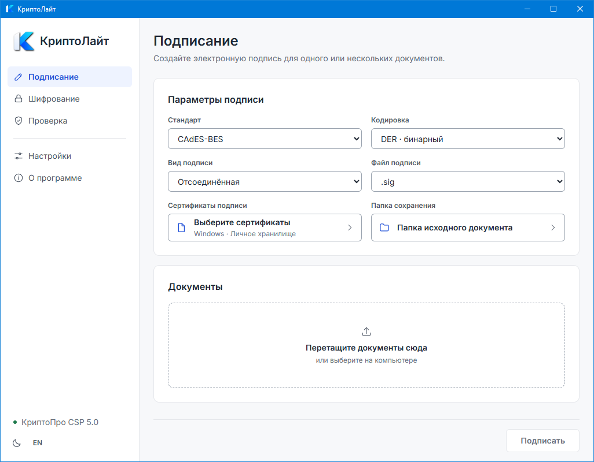

Подпись документов
Подпишите один документ или сразу несколько: договоры, акты, заявления. Поддерживаются CMS/PKCS#7, CAdES-BES и CAdES-T. Формат CMS/PKCS#7 можно подписать несколькими сертификатами.
Электронная подпись - это просто
«Зачем платить за сложные программы, если есть КриптоЛайт? Скачал — запустил — подписал — и в ус не дуешь! Даже устанавливать не обязательно»
Подпишите договор, проверьте подпись контрагента или зашифруйте файл — с вашим сертификатом и КриптоПро CSP. Без сложных настроек.

Подпись, проверка и шифрование документов — в одной программе.
Подпишите один документ или сразу несколько: договоры, акты, заявления. Поддерживаются CMS/PKCS#7, CAdES-BES и CAdES-T. Формат CMS/PKCS#7 можно подписать несколькими сертификатами.
Поставьте видимую отметку об электронной подписи прямо на страницу PDF: фамилия, должность и дата. Можно подписать несколькими сертификатами. Отметка соответствует ГОСТ Р 7.0.97-2025. PDF не должен быть защищён паролем.
Убедитесь, что документ не менялся после подписания, а сертификат действует. Проверка цепочки сертификатов и отзыва по CRL (списку отозванных сертификатов; для загрузки списка нужен интернет).
Зашифруйте документ для одного или нескольких получателей. Прочитать его сможет только тот, у кого есть нужный ключ.
Программа видит сертификаты на токене Рутокен (электронном ключе) и в личном хранилище компьютера. PIN-код и закрытые ключи программа не сохраняет.
Windows-версия — один .exe, для Astra Linux есть портативный AppImage. Файлы можно перетащить в окно — установка не нужна.
Подойдёт бухгалтерам, кадровикам, директорам школ и всем, кто обменивается документами.
Актуальная версия: 0.7.11 (alpha) · Все версии
Версия 0.7.11 — предварительная (alpha). При обычной работе программа стабильна, но перед использованием в организации проверьте её на одном рабочем месте.
Windows-версия и AppImage не требуют установки. Для Astra Linux также доступен установочный .deb.
Пошаговые инструкции: как подписать документ, поставить штамп на PDF, проверить подпись и расшифровать файл.
Файл откроется в Word, LibreOffice или другом редакторе документов.